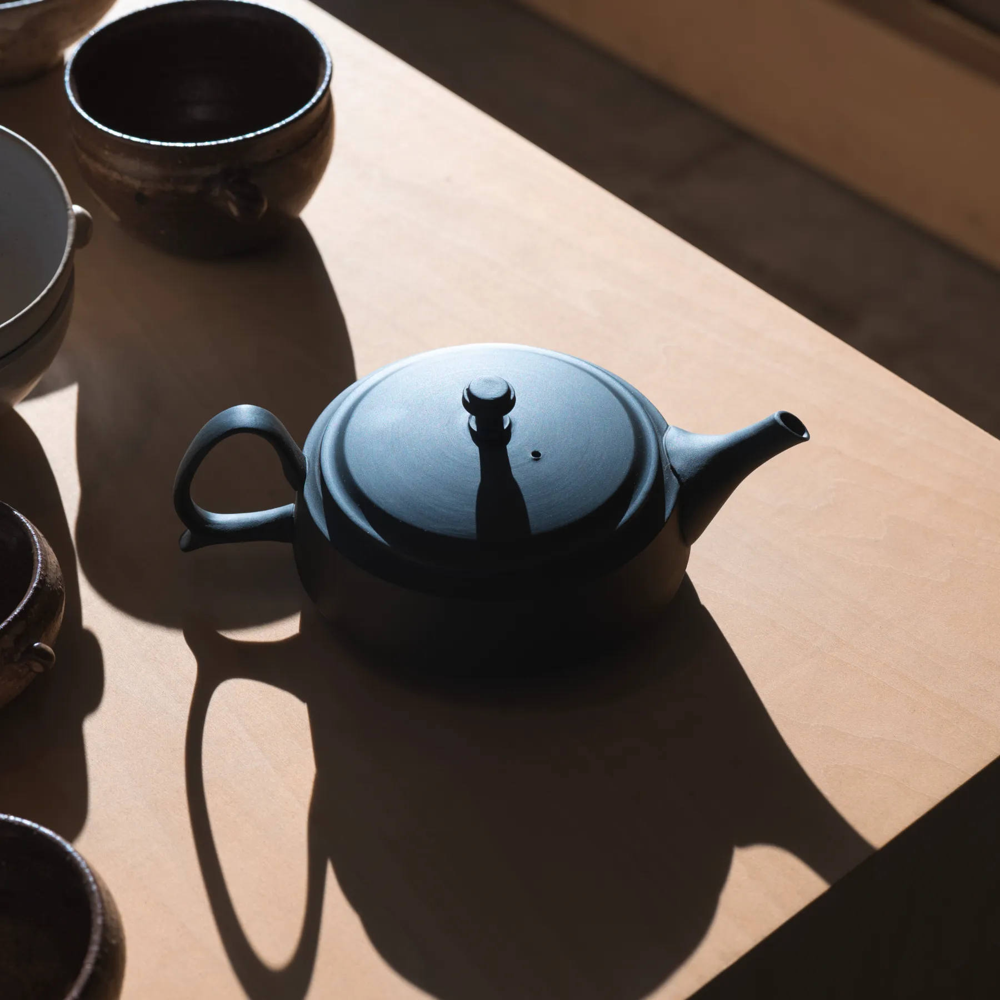
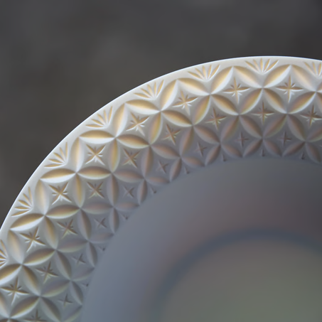
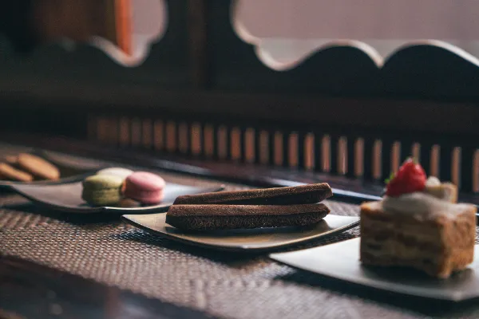
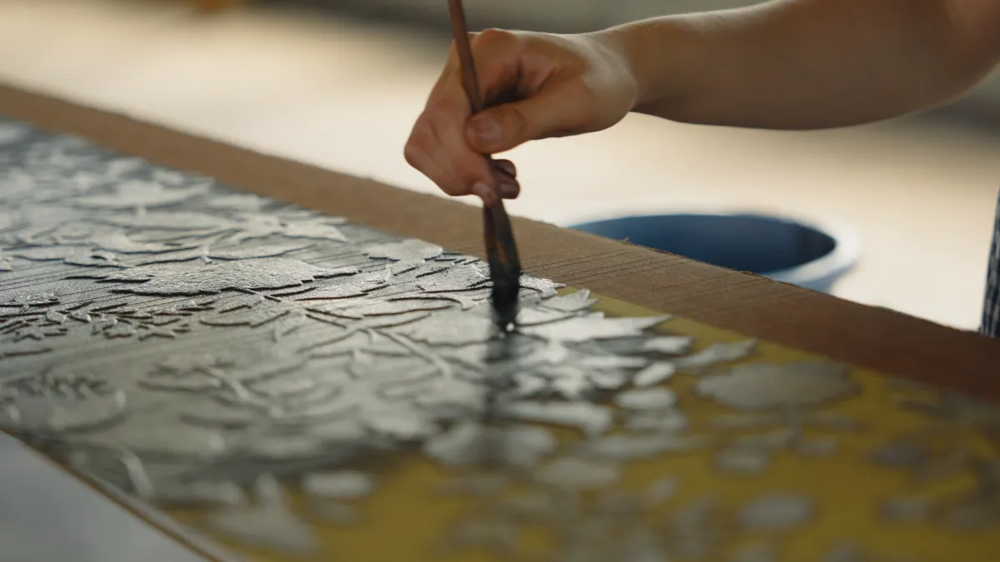
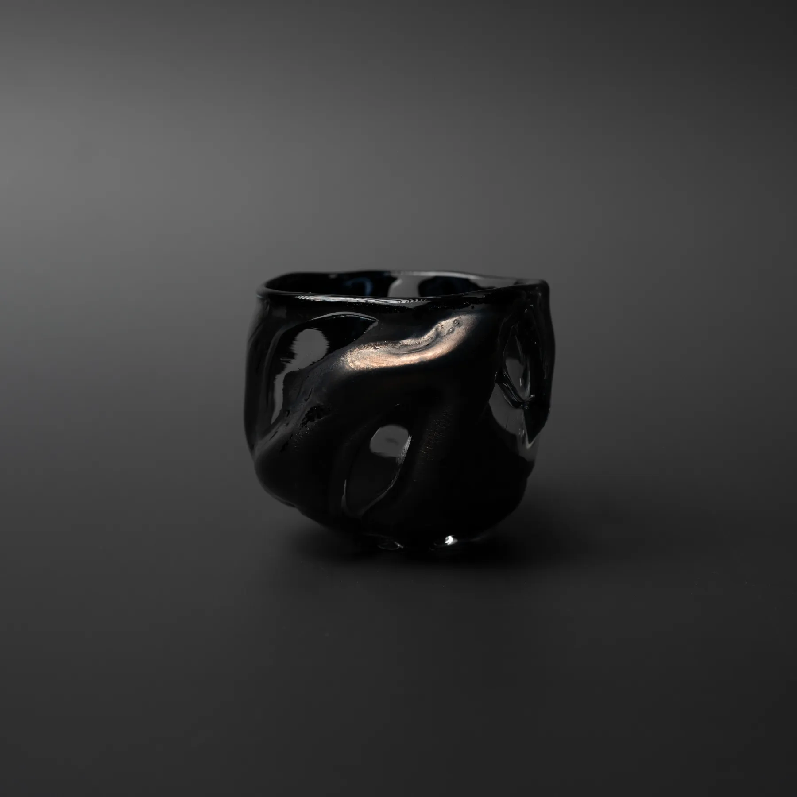
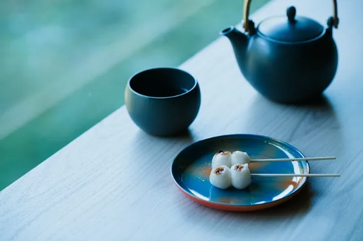
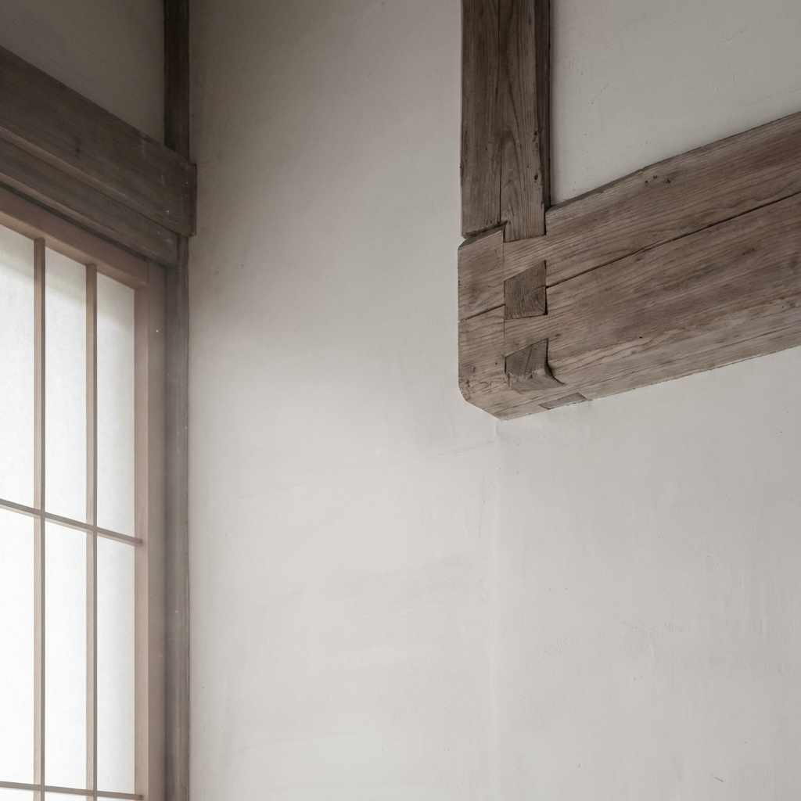
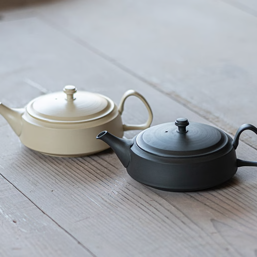

結び、ほどく、創造の場。—— The Art of Narrative.
NARRAは、キャラクター・作品・世界観——IPと、日本のものづくりをひとつの窓口で結ぶコラボレーションハブです。
1社の契約から、複数のメーカー・複数の商品・複数の販路が動き出します。

静寂の中で研ぎ澄まされた技術と、想い。
NARRAは、日本のものづくりと物語（IP）を現代に解き放つ場所です。
作り手とIPホルダー、そして異分野の感性が結びつき、解け合い、
新たな創造を紡ぎ出す——「結び目」としての空間です。
IPを活かしたいメーカーと、IPを届けたいホルダー。双方に熱があっても、契約と調整の重さがプロジェクトを止めてきました。
ライセンス契約の経験がなく、法務・条件交渉・ロイヤリティ設計の入口で止まる。作る力はあるのに、結ぶ手段がない。
メーカー1社ごとの審査・契約・監修は手続きが重く、小さなプロジェクトはリードしきれない。動かしたい気持ちはあるのに、始まらない。

Maker メーカー A ｜ 器
Maker メーカー B ｜ 菓子
Maker メーカー C ｜ 刃物百貨店・バイヤーにとっても「1つの窓口で複数の商品を持てる」ことは、そのまま話の早さになります。クラウドファンディングの現場で機能してきた営業ハブの型を、IPコラボレーションへ。
誰もが知る大型IPの乱発コラボではなく、世界観の濃いIPを選び抜き、プロダクトと丁寧に掛け合わせます。
1商品で終わらせず、集めて並べたくなるシリーズ設計。ファンの熱量が持続する形をつくります。
飾るだけのグッズではなく、器・食品・道具——日常で使われるものにIPを宿らせます。

実績と原価構造の見えているライフスタイル商材を中心に、コラボ設計しやすい領域からご提案します。
縁起物×キャラクター。絵付けの自由度が高く、コレクション化と相性抜群。
割れにくい樹脂食器。子どもからアウトドアまで、幅広い世代×幅広いデザイン展開。

実用の道具×IPの意匠。コレクション需要と贈答需要の両方を取れる領域。
柄を「印字するだけ」で世界観が立ち上がる。空間ごとIPに染める提案が可能。

シーズナルに強く、IPを非連続に掛け合わせやすい本命ジャンル。日本茶・日本酒も射程に。
マグカップ、ボトルキャップほか。手に取りやすい価格帯で、ファンの入口をつくる。
NARRAが伴走する、日本のつくり手たち。産地の技と現代の暮らしを結ぶパートナーです。
日本一の陶磁器産地、岐阜・美濃焼。人間国宝を生む芸術性と高い工業力を併せ持ちながら、作家と工場は分断されてきました。その両者を繋ぎ「手間をかけた量産」に挑むのがHINOMIYAプロジェクト。2年間の対話と試行錯誤を経て、産地の強みを最大化した新たな関係性が形になりました。

戦後創業の髙資陶苑は、困難とされた鋳込製法を常滑で確立し、産地の発展を牽引した名門。朱泥の風合いを活かした製法を礎に、二代目は現代の生活様式へ最適化。装飾を削ぎ落とした究極にシンプルな造形で土本来のクリアな質感を際立たせ、常滑焼急須の価値を再定義しています。
IP × つくりてによる第一弾コラボレーションは、まもなく。
1窓口で複数商品を提案できるNARRAの強みが最も活きる売場。
全国の小売・専門店ネットワークへ。継続取引を前提に販路を拡張。
民間サポートの薄かった海外出展を伴走。出展から商談・物販まで。
運営・物語運輸株式会社は、海外クラウドファンディング（Kickstarter）を主戦場に、日本のものづくりを世界へ届けてきました。その実行力が、NARRAの土台です。
目標 ¥300,000 ｜ 支援者 161人 ｜ プロダクトデザイン
1,050％達成 ｜ 支援者 177人 ｜ プロダクトデザイン
849％達成 ｜ 支援者 202人 ｜ ホーム＆ライフスタイル
アイテムや使用する素材によって異なりますが、希少な伝統素材を用いた小規模な記念品（数十個〜）から、ホテルアメニティや観光施設での配布用（数千個単位）まで、柔軟に対応可能です。段階的な導入や、IPの規模に合わせたロット設計についてもお気軽にご相談ください。
はい、コンセプト立案から最終的なプロダクト実装まで一貫してサポートします。IPの世界観を日本のものづくりで表現する限定プロダクト、ホテル・観光施設のアイデンティティを体現するオリジナルアイテムなど、パートナー様のブランド背景を深く理解した上で最適な形をご提案します。
通常、企画・試作に2〜4ヶ月、本制作に3〜6ヶ月程度を標準的な目安としています。伝統的な素材は生産に時間を要するものが多いですが、IPのリリース日やイベントといった「外せない期限」に合わせた進行管理を徹底します。お急ぎの場合は、既定のベースアイテムへの独自カスタマイズで短納期に仕上げることも可能です。